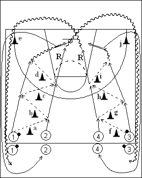

Catégorie : ECHAUFFEMENT (Ech-012)
Déroulement
- Quatre files de joueurs au niveau de la ligne médiane. Les ballons sont dans les files extérieures.
- Les premiers joueurs des files 1 et 2 effectuent des passes (éventuellement bouce passes) entre les cônes a, b, c et d et le premier joueur de la file 1 réalise un lay-up. Dans le même temps, les premiers joueurs des files 3 et 4 se font également des passes entre les cônes f, g, h et i et le premier joueur de la file 3 effectue un jump shoot.
- 2 prend le rebond de 1 et va dans la file 3 en passant en dribble derrière le cône j, tandis que 1 contourne le cône e pour rejoindre la file 2. De même, 4 prend le rebond de 3 et va en dribble derrière le cône e dans la file 1, tandis que 3 passe derrière le cône j et va en 4.
Coaching points
- Veiller à ce que les quatre joueurs partent chaque fois en même temps.
- Après 2 ou 3 minutes, réaliser le lay-up à droite et le jump shoot à gauche.